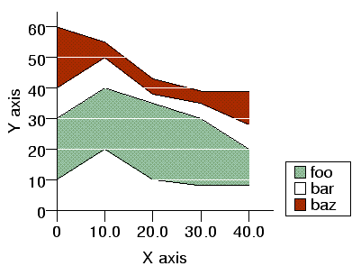

| PyChart |
| PyChart |

Sample range plot
Below is the source code that produces the above chart. ../demos/rangetest.py
from pychart import *
data = [ (0, 10, 30, 40, 60), (10, 20, 40, 50, 55), (20, 10, 35, 38, 43),
(30, 8, 30, 35, 39), (40, 8, 20, 28, 39) ]
ar = area.T(x_axis = axis.X(label="X axis"),
y_grid_interval = 10, y_grid_style = line_style.white,
y_axis = axis.Y(label="Y axis"),
y_grid_over_plot=1, legend = legend.T())
if theme.use_color:
colors = [ fill_style.darkseagreen, fill_style.white, fill_style.brown ]
else:
colors = [ fill_style.gray90, fill_style.white, fill_style.gray50 ]
ar.add_plot(range_plot.T(label="foo", data=data, fill_style = colors[0]))
ar.add_plot(range_plot.T(label="bar", data=data, min_col=2, max_col=3,
fill_style = colors[1]))
ar.add_plot(range_plot.T(label="baz", data=data, min_col=3, max_col=4,
fill_style = colors[2]))
ar.draw()
This class supports the following attributes:
Specifies the data points. See Section 5
The label to be displayed in the legend. See Section 6.3, See Section 17
The style of the boundary line.
The upper bound of the sweep is extracted from this column of data.
The lower bound of the sweep is extracted from this column of data.
The column, within attribute "data", from which the X values of sample points are extracted. See Section 5
| PyChart |